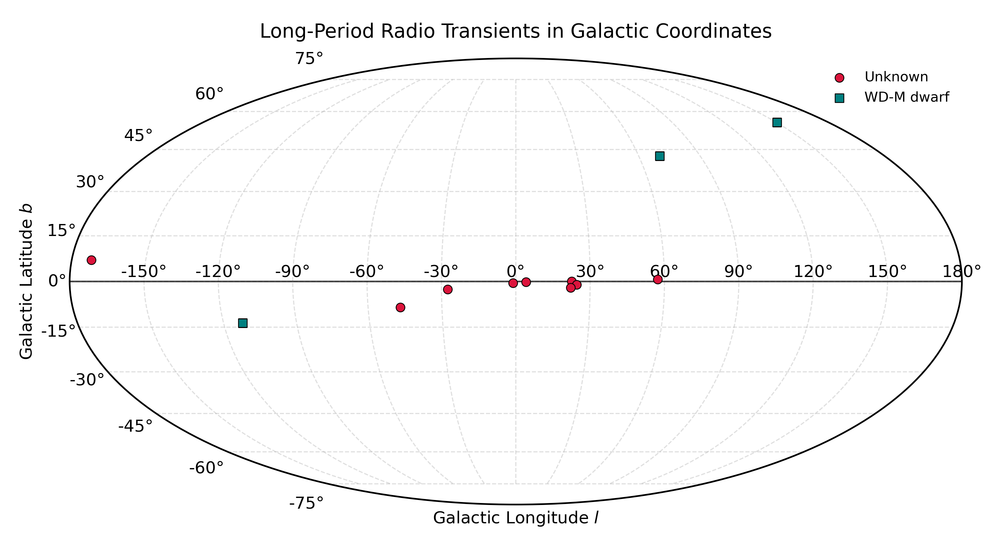

LPT-Cat is a curated catalog of long-period radio transients (LPTs), a myterious population of radio sources characterized by minute- to hour-long periodicities. This catalog compiles published LPTs from the literature, including their positions, periods, spin-down constraints, dispersion measures (DM), rotation measures (RM), and key observational notes. Upper limits and measurement uncertainties are presented as 1σ when available.
You can download the catalog in CSV version.
If you find any errors or missing information, please let me know via email (zhao27[AT]tsinghua.edu.cn). If you use LPT information from this catalog in your research, please cite the relevant discovery papers listed in the References column. Acknowledging the use of this website in your research paper would be appreciated. Thanks!
